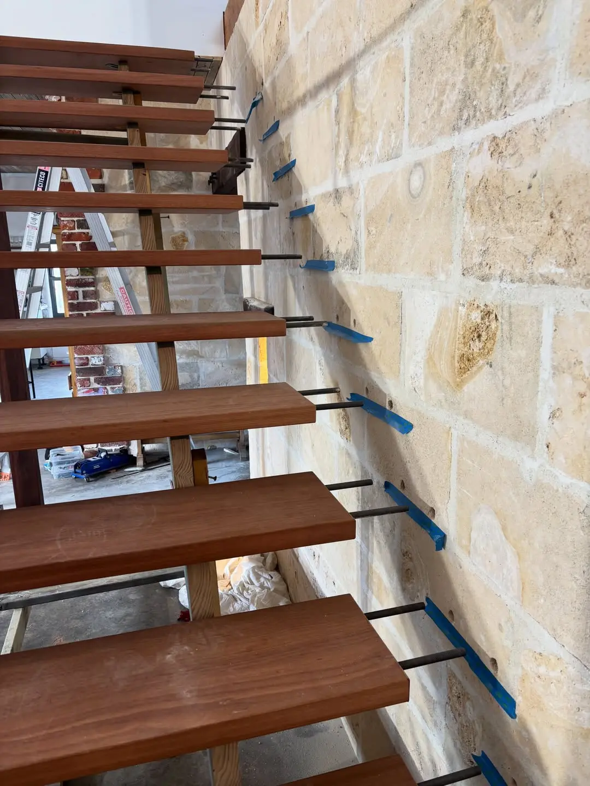
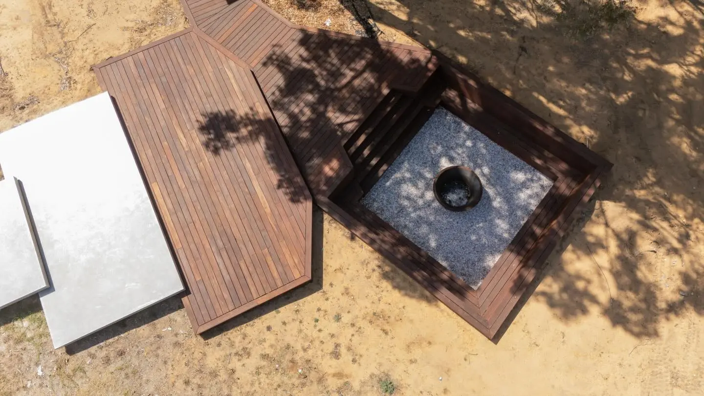
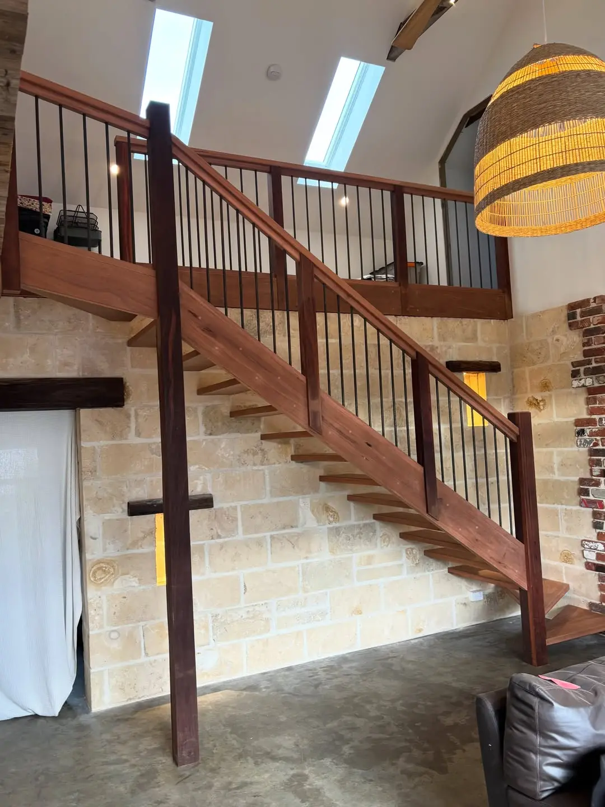
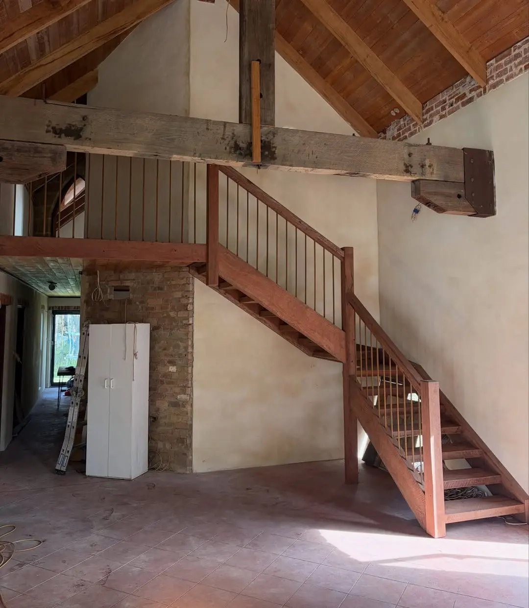
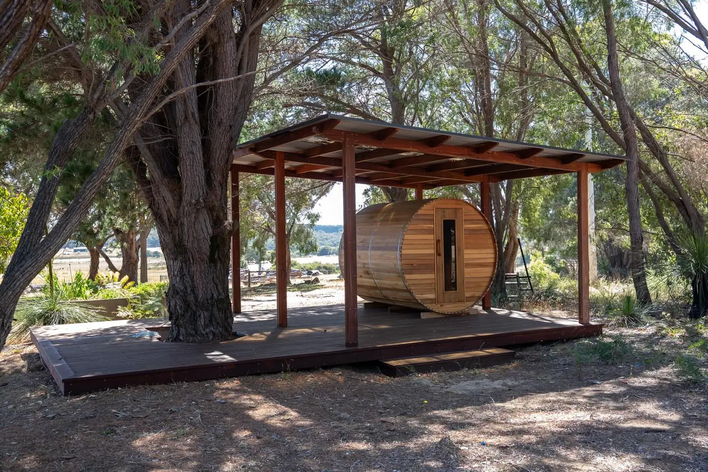
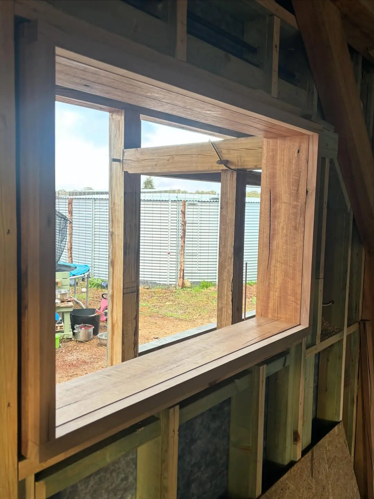
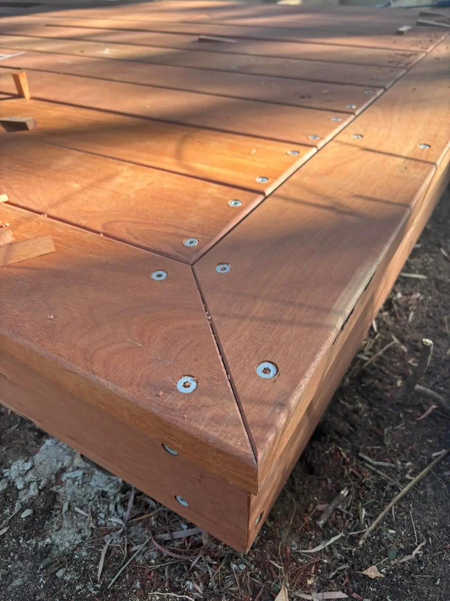

Timber work that goes the country mile.
Staircases, decks, outdoor rooms and joinery in Jarrah, Karri and Marri. Hand built by Daniel Weston in his Witchcliffe shed for homes across the Margaret River region.
Based in Witchcliffe. Building across the Margaret River region and surrounds.
The pine tree retreat and bush playground, filmed from above.
JarrahEucalyptus marginataYou don't want a stair out of a catalogue. You want the one that could only belong in your house.
Everything comes in pine and plasterboard
Most builders reach for the same treated pine and the same kit balustrade. Fine for a spec home. Not for the place you've been dreaming about.
Nobody wants to keep the character
You've got old Jarrah, a rough-sawn look you love, or a tree you won't cut down. Too often the answer is "that's too hard".
Three trades, three opinions
Framer, deck builder, joiner. Every handover is a chance for the vision to get lost and the finish to slip.

One carpenter who loves the hard bits.
Hanging a staircase off a limestone wall. Decking around a living pine. Keeping old 75x300 Jarrah rough through every part of a stair. Those are the jobs Daniel picks up the phone for.
- Real WA hardwoods, chosen for your job and your site
- Built and dry fitted in the shed, so it goes in right
- Framing, lock-up and finishing by the same set of hands
Recent builds, in Daniel's words.
Every project here has its own page with the full story, the timber used, and photos from the shed through to the finished job.





“It was fun pretending to be a kid again trying to imagine how the playground will flow and creating it.”Daniel, on the bush playground

Contents
If it's made of timber and it has to be done properly, it's probably on this list. Each one links to a job where you can see it done.
Staircases
See: Karri and rough-sawn Jarrah stairsHoused, hand-fitted stairs in solid hardwood, dry fitted in the shed first.
Decks and verandahs
See: The 170 m² wraparound deckJarrah decks that wrap the house, step down, or go round a tree.
Outdoor rooms
See: The pine tree retreatPavilions, sauna shelters, arbors and sunken fire pits.

Interior joinery
See: Library room, kitchens and slidersShelving, benchtops, barn sliders and built-ins with real timber.
Play spaces and fencing
See: The bush playgroundForts, bridges, swings and post and rail fences built to last.

Framing and renovations
See: Framing on the wraparound jobRoof framing, pergolas, doors, windows and lock-up.

Six WA hardwoods. Pick one.
The South West grows some of the best timber in the country. Choose a species to see its grain and the jobs Daniel has built with it.

Jarrah Eucalyptus marginata
The deep red WA hardwood. Hard, heavy and made for the weather, so it carries Daniel's decks, verandahs, stairs and outdoor rooms. Rough-sawn or dressed, it only gets better with age.
From the shed to your place.
Four steps, shown through the Karri staircase: marked out by hand, built in Daniel's Witchcliffe shed, then installed on site.
Have a yarn
Call or send a brief through the planner. Daniel comes out, looks at the site and listens to what you're picturing, then talks timber and price straight.

Pick the timber
Jarrah, Karri, Marri or your own old boards. Daniel helps you choose for colour, grain and where it's going, then marks out every piece by hand.
Built in the shed
The tricky pieces are built and dry fitted in Daniel's Witchcliffe shed first, so every joint is right before anything comes to your place.
“Super happy with how this Karri stair case has come together in the shed, time to take it too site and do the install!”Daniel, on Instagram
Installed and finished
Then it comes to site and goes in properly. Fixed, checked, oiled and cleaned up, ready to use.
“Each piece of timber housed and checked into each other and then suspended off the limestone wall was a challenge but such a rewarding end result!”Daniel, on the finished Karri stair
Daniel Westonin the shed, WitchcliffeA local carpenter who builds with purpose.
“Quality workmanship, honest service, and a passion for building with purpose.”Country Mile Carpentry
Daniel runs Country Mile Carpentry out of his shed in Witchcliffe, surrounded by stacked slabs of local hardwood. He takes on the jobs other carpenters pass on: the one-off stair, the deck around the tree, the playground with no kit in sight. Then he does them the long way, because that's what lasts.
- Business
- Country Mile Carpentry Pty Ltd
- ABN
- 13 693 253 315
- Based in
- Witchcliffe, WA 6286
- Licence and insurance
- Details to add
What people say when the job's done.
Straight from the comments on Daniel's Instagram posts.
She's a beauty! Thank you
alana839on the 170 m² wraparound deckLovely work mate
Epic
Had Daniel build something? Leave him a Google review.
Start your build in a minute.
Four quick steps. Daniel gets a clear brief, you get a call back to talk it through. No obligation, no hard sell.
Thanks. Here's what Daniel will see.
This is a concept site, so nothing was sent. On the live site your brief and photos go straight to Daniel's inbox.
Before you ring.
What area do you cover?
Daniel is based in Witchcliffe and works across the Margaret River region and surrounds, including Margaret River, Cowaramup, Gracetown, Prevelly, Karridale, Rosa Brook and Augusta. If you're further out, ring him and ask. Bigger jobs can be worth the drive.
What timber do you work with?
Mostly local WA hardwoods: Jarrah, Karri, Marri, Wandoo, Blackbutt and Tuart. If you've got old timber you'd love to reuse, like the 75x300 Jarrah in the rough-sawn staircase, talk to Daniel about it.
Do you do the framing as well as the finishing?
Yes. On the wraparound deck job Daniel framed the roof and pergola, took the house to lock-up with doors and windows, put up the weatherboards and then built the deck. One carpenter, start to finish.
Can you build something that isn't in your photos?
That's most of the work. Stairs, decks, pavilions, shelving, playgrounds and fit-outs are all one-offs. Send a sketch, a photo or just a rough idea through the planner and Daniel will tell you what's possible.
How do I get a price?
Use the project planner above or call Daniel on 0423 328 852. Tell him what you're building, where, and roughly when. He'll come back to you to talk it through and arrange a look at the site.
Got a build in mind? Daniel's a phone call away.
Tell him what you're picturing. He'll tell you honestly how he'd build it, what timber he'd use, and what it'll take.
Building across the Margaret River region
- Witchcliffe
- Margaret River
- Cowaramup
- Gracetown
- Prevelly
- Karridale
- Rosa Brook
- Augusta
- and surrounds